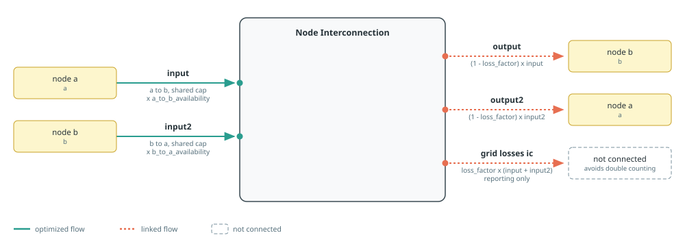
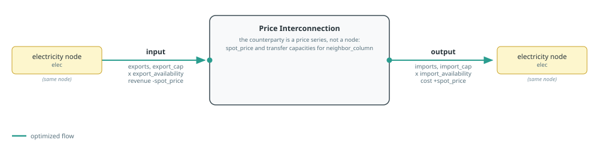

Interconnections
Posy2 offers two representations of cross-zone exchange. A node interconnection connects two explicit model nodes. A price interconnection represents an external market through import and export capacities and an exogenous price series.
See Component Builders for shared capacity and port conventions, Tags And Post-Processing for tagging and reporting, and Input Workbooks for the transfer-capacity and price sheets. Each section's diagram follows the conventions in Reading The Port Diagrams.
Direction And Transfer Multipliers
Price interconnections have separate import and export base capacities. Node interconnections instead have one installed cap shared by both directions. Their two hourly multipliers express directional available transfer capacity against that shared rating. In timeseries_mode=:excel, an omitted multiplier is read from the sheet that belongs to the builder and link type; in :arguments mode it defaults to one.
| Builder | Sheet |
|---|---|
makepricelink | transfer_capacities |
maketransmissionlink, dc=false | transfer_capacities_AC |
maketransmissionlink, dc=true | transfer_capacities_DC |
Splitting the node sheets by link type lets an AC and a DC link on the same node pair carry their own availability, and keeps both separate from the priced corridors. In every sheet the column is named for the direction, written as From>To with no spaces. Effective capacity is the base capacity multiplied by that series. The values are therefore fractions or other multipliers, not absolute MW capacities.
Setting a node interconnection's shared cap to numeric zero skips both multiplier lookups. An optimized or externally supplied capacity resolves both directions because its value is not known while the component is built. Set a directional multiplier to zero to disable that direction. Price interconnections retain their separate directional-capacity behavior, and skip a direction's lookup when that direction's capacity is a fixed zero.
For a price interconnection, exclusive_direction=true adds an SOS1 constraint at every timestep so that imports and exports cannot be used simultaneously. For a node interconnection, exclusive_direction=true likewise constrains the two sending ports (input and input2) so that only one direction can be positive in a given hour. This may require solver support beyond a plain continuous LP.
Node Interconnections
maketransmissionlink names the component "$(name)_$(a.name)_$(b.name)". Its first direction is a -> b:
inputwithdraws from nodeaand carries the sharedcapmultiplied bya_to_b_availability;outputdelivers to nodebafterloss_factor.
The reverse direction is b -> a:
input2withdraws from nodeband carries the samecapmultiplied byb_to_a_availability;output2delivers to nodeaafterloss_factor.

loss_factor must be finite and lie in [0, 1). Each delivered flow is its sending flow multiplied by 1 - loss_factor; invalid factors are rejected before model construction.
The endpoints must be distinct. Self-connections and generated-name collisions are rejected before the builder creates component variables or directional SOS constraints.
Exactly one AC and one DC may share the same unordered node pair (either, both, or neither is fine). A second AC or a second DC on that pair raises an error. Aggregate equivalent parallel circuits before calling the builder.
cap follows the common component capacity contract: nothing optimizes it, a number fixes it, a JuMP variable or affine expression is reused, and an extracted snapshot inherits it. mincap and maxcap bound an optimized or reused capacity and assert against a fixed or inherited value.
The input and input2 capacity behaviors reference the same number or JuMP affine expression. Nosy applies each directional constraint and multiplier, but there is only one capacity value and therefore one investment decision.
Annualized overnight_cost and annual om_fixed_cost are attached once to the shared capacity. transaction_cost is applied to each direction's sending flow. The unconnected grid losses ic output records proportional losses for reporting.
Tags: :zone => a.name, :zone => b.name, and the function tags interconnection, nodeinterconnection, and either AC or DC. There is no component-level foreign tag: a node interconnection counts as foreign in reports exactly when at least one of its endpoints is a node tagged :foreign. Give nodes the appropriate :electricity and :foreign tags for self-versus-foreign reports.
DC Power-flow Metadata
Here dc classifies the interconnector for Kirchhoff voltage-law constraints; it does not make the link unidirectional. dc=false creates an AC-classified link, while dc=true excludes it from the cycle constraints added by applydcopf!.
When DC power flow is enabled in Posy2Options, every AC node interconnection must supply a negative series susceptance ($B\approx-1/X$ for inductive lines). The builder stores it in the snapshot's internal registry. Call applydcopf! after adding all links and before optimisation; once it has run, the node interconnections are frozen and a further maketransmissionlink call raises an ArgumentError. See Optimising A Snapshot for the complete workflow.
See the Two Countries example for a transport link, and the DC OPF example for AC and DC networks with Kirchhoff voltage-law constraints.
Posy2.maketransmissionlink — Function
maketransmissionlink(name::String, a::Node, b::Node, s::Snapshot;
cap=nothing, mincap=nothing, maxcap=nothing,
exclusive_direction::Bool=false, dc::Bool=false,
transaction_cost::Real=0., loss_factor::Real=0.,
susceptance::Union{Nothing,Real}=nothing,
a_to_b_availability=nothing, b_to_a_availability=nothing,
overnight_cost=nothing, om_fixed_cost=nothing,
lifetime=nothing, construction_profile=nothing,
)Build, connect and return an interconnection component linking two nodes. Whether the link crosses the self-system boundary is derived at reporting time from the connected nodes' :foreign tags; there is no component-level flag.
Arguments:
name: interconnector name prefix.a: first node linked by the interconnector.b: distinct second node linked by the interconnector; self-connections are rejected before model construction.s: snapshot to register the component in.cap: Installed capacity in MW. A number fixes capacity, a JuMPVariableReforAffExprreuses that expression,nothingcreates a capacity decision, and an extractedSnapshotinherits the capacity of"<name>_<a.name>_<b.name>"in it. Numeric0builds a zero-capacity component.mincap: Lower capacity bound in MW; checked as an assertion against a fixed or inherited one.maxcap: Upper capacity bound in MW; checked as an assertion against a fixed or inherited one.exclusive_direction: apply an SOS1 one direction at a time flow constraint.dc: iftrue, tag as:DC; otherwise tag as:AC.transaction_cost: Transaction adder in currency/MWh on each direction.loss_factor: Dimensionless proportional loss; must be finite and satisfy0 <= loss_factor < 1.susceptance: AC series susceptance in model power units/rad (MW/rad under the standard convention; must be negative), used only whendc=false; stored inSnapshot.options[:ic_susceptance](required for KVL whenapplydcopf!is called).a_to_b_availability: Dimensionless hourlya -> bmultiplier vector or scalar, each value in[0, 1].b_to_a_availability: Dimensionless hourlyb -> amultiplier vector or scalar, with the same[0, 1]domain. These directional multipliers represent asymmetric available transfer capacity against the shared installed capacity. A nonzero fixed or optimized capacity reads both workbook columns in:excelmode when omitted, and defaults both to one in:argumentsmode. Numeric zero does not resolve either availability series.overnight_cost: Overnight CAPEX in currency/kW of shared capacity. Defaults to zero.om_fixed_cost: Fixed O&M in currency/kW/year of shared capacity. Defaults to zero.lifetime: Asset lifetime in years, used to annualize nonzero overnight cost (> 0, integer-valued).construction_profile: Dimensionless yearly construction-cost shares, required whenovernight_costis nonzero.
In :excel mode both directional multipliers are read from the sheet that matches the link type: transfer_capacities_AC when dc=false, transfer_capacities_DC when dc=true. Columns are named From>To after the node names. An AC and a DC link on the same node pair therefore carry their own availability series, and neither reads transfer_capacities, which belongs to makepricelink.
Node interconnections cannot be added after applydcopf! has run on the snapshot; build the full topology first.
Exactly one AC and one DC may share the same unordered node pair (either, both, or neither is fine). A second AC or a second DC on that pair raises an error. Component-name collisions are also rejected before model construction. Aggregate equivalent parallel circuits before calling this builder.
Price Interconnections
makepricelink creates "$(name)_$(elec.name)" without creating an explicit node for the neighbouring market. Imports use component output, base capacity import_cap, multiplier column neighbor_column>local, and the neighbour's spot_price series. Exports use component input, base capacity export_cap, and multiplier column local>neighbor_column. Export energy earns the same exogenous spot price; transaction_cost is added in both directions.
The counterparty has three separable roles. name gives the component its identity, neighbor is the counterparty reported by the :neighbor tag and by directed flow labels, and neighbor_column names the workbook columns. neighbor defaults to name and neighbor_column to neighbor, so a corridor whose report label and workbook columns both match its name needs only name.
Both capacities follow the common capacity contract of Component Builders: a number fixes them, nothing optimizes them, a JuMP variable or affine expression is reused, and an extracted snapshot inherits the output (import) and input (export) capacities of "$(name)_$(elec.name)". import_mincap/import_maxcap and export_mincap/export_maxcap bound an optimized or reused capacity and assert against a fixed or inherited one. Neither direction carries an investment cost, so an optimized capacity should be bounded.

Tags: :neighbor => neighbor, :zone => elec.name, and the function tags interconnection and priceinterconnection. With neighbor_is_foreign=true, the builder also adds the function tag foreign. This is the default because the common use case is a market outside the modelled system. Set it to false when the price series represents another internal zone. A transmission link needs no such flag: its two endpoints are nodes, so their own :foreign tags decide. A price interconnection's remote endpoint is not a node, so the builder states the neighbour's foreignness instead.
Price interconnections do not participate in DC power flow cycle constraints: they have no second explicit electrical node or susceptance.
Numeric zero capacities disable a direction. When both import_cap and export_cap are zero the whole corridor is disabled: no spot price or availability column is read, and reports show the interconnection with a zero price and zero volumes.
See the Price Interconnection example for a complete model using this builder.
Posy2.makepricelink — Function
makepricelink(name::String, elec::Node, s::Snapshot;
neighbor::String=name, neighbor_column::String=neighbor,
import_cap=nothing, import_mincap=nothing, import_maxcap=nothing,
export_cap=nothing, export_mincap=nothing, export_maxcap=nothing,
exclusive_direction::Bool=false, neighbor_is_foreign::Bool=true,
transaction_cost::Real=0.,
spot_price=nothing, import_availability=nothing, export_availability=nothing,
)Build, connect and return an interconnection component named "<name>_<elec.name>", trading with a neighbouring market represented by an exogenous price series instead of an explicit node. If exclusive_direction is true, apply a one direction at a time constraint at every timestep.
Arguments:
name: interconnector name prefix.elec: local electricity node to connect the interconnector to.s: snapshot to register the component in.neighbor: counterparty market, reported as the:neighbortag and as the remote endpoint of directed flows. Defaults toname.neighbor_column: name the workbook columns are built from. Defaults toneighbor.import_cap: Import capacity in MW, following the common capacity contract: a number fixes it, a JuMPVariableReforAffExprreuses that expression,nothingcreates a capacity decision, and an extractedSnapshotinherits the"output"capacity of"<name>_<elec.name>"in it. Numeric0disables imports.import_mincap: Lower import capacity bound in MW; checked as an assertion against a fixed or inherited one.import_maxcap: Upper import capacity bound in MW; checked as an assertion against a fixed or inherited one.export_cap: Export capacity in MW, with the same contract; an extractedSnapshotinherits the"input"capacity. Numeric0disables exports.export_mincap: Lower export capacity bound in MW.export_maxcap: Upper export capacity bound in MW.exclusive_direction: iftrue, apply SOS1 one direction at a time flow constraint.neighbor_is_foreign: iftrue, the neighbouring market lies outside the modelled system and the component is tagged:foreign. A price interconnection carries this on itself because its remote endpoint is not a node that could hold a:foreigntag, unlikemaketransmissionlink. Set it to false when the price series represents another internal zone.transaction_cost: Transaction adder in currency/MWh on both directions.spot_price: Foreign spot price in currency/MWh, as an hourly vector or scalar.import_availability: Dimensionless hourly multiplier for the foreign-to-local direction, each value in[0, 1], read from column"<neighbor_column>><elec.name>".export_availability: Dimensionless hourly multiplier for the local-to-foreign direction, with the same[0, 1]domain, read from column"<elec.name>><neighbor_column>". Availability is resolved for every direction except a numeric zero one. When omitted, it comes from the workbook in:excelmode and defaults to one in:argumentsmode.spot_priceis required whenever either direction has active capacity, and is read from column"<neighbor_column>". When both capacities are numeric zeros the corridor is disabled: no spot price is read and the reported exogenous price is an hourly series of zeros.
Neither direction carries an investment cost, so bound an optimized capacity with import_maxcap or export_maxcap.
Losses And Reporting
Node-interconnection losses are recorded once on the component. Loss reports allocate half to each connected node to avoid double counting, so system totals count a corridor once while grouping losses by source recovers the whole corridor. Price interconnections have no loss flow: their losses are embedded in the exogenous price. Directed flow reports use labels of the form from > to; price-interconnection labels combine the :neighbor tag and connected local node, while node links derive their endpoints from port carriers. Annual workbook tables include interconnection capacity and volume for all links, then AC-only and DC-only node-interconnection views (price interconnections appear only in the total tables). Hours at NTC (Net Transfer Capacity, the directional transfer limit) are reported as (AC or DC) (hour counts if either link is binding), then (AC) and (DC) separately. In the hourly time-series sheet, the same directed from > to label is used; when AC and DC share a corridor their flows are summed into one column (there are no separate AC/DC time-series columns). The hourly sheet also reports available transfer capacities (ATC from > to) for foreign links, using the same endpoint conventions: price interconnections built with foreign=true, and node interconnections with at least one :foreign-tagged endpoint (foreign-foreign transit corridors included). A price-interconnection direction without a capacity limit is omitted, and ATCs of AC and DC links sharing a corridor are summed into one column. The sheet's Total net interconnection column is the net import of the self system across its boundary, using the same foreignness convention as the ATC columns: node interconnections are classified by their endpoint nodes' :foreign tags, price interconnections by their own foreign flag. Corridors between two self nodes, between two foreign endpoints, and price interconnections built with foreign=false all cancel out, and swapping the two nodes passed to maketransmissionlink does not change the column.
Give each explicit electricity node a distinct carrier name. Endpoint discovery uses those carrier names rather than parsing underscores or other punctuation from the component name.